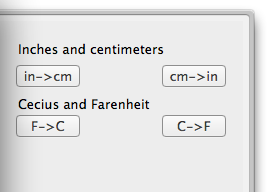
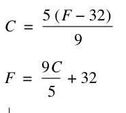

We are going to have a lot more converters here, but so far, we have four.

Conversation between inches to centimeters and visa versa.
Two buttons on the converters sidepanel, are used for converting between those units. The two functions are:
- in2cm(x) - convert from inches to centimeters. ==> multiplies x by 2.54
- cm2in(x) - convert from cebtimeters to inches. ==> divide x by 2.54
Converting between celcius to farenheit and visa versa.
- c2f(x) - convert from celcius to farenheit
- f2c(x) - convert from farenheit to celcius
Formulas used for this conversation:
